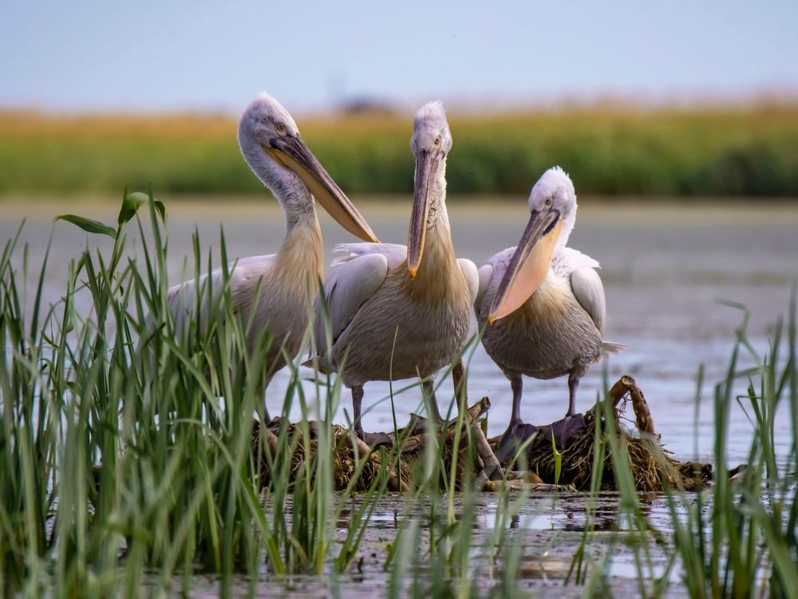
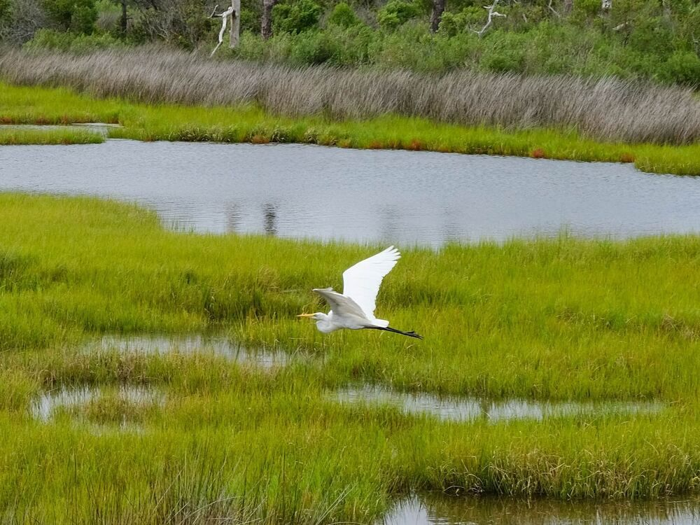
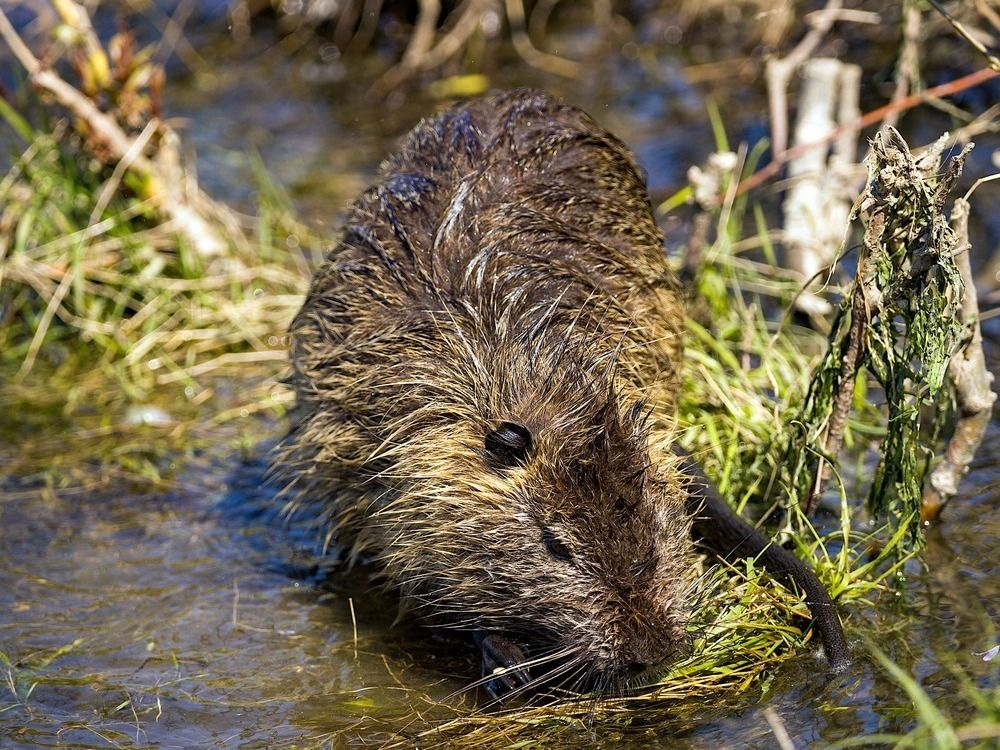
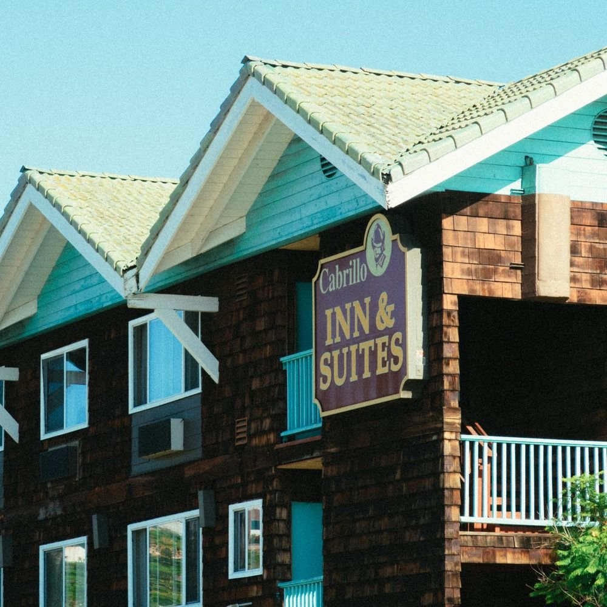

Welcome Visitors
Places to See

Alligator River Wildlife Refuge
Explore winding trails, encounter vibrant bird species, and experience a coastal ecosystem teeming with life.

Buckridge Reserve
Stroll along the wooden boardwalk and view the coastal wetlands teeming with rare and endangered species like the red wolf and bald eagle.

Pocosin Lakes Wildlife Refuge
Reconnect with nature by hiking along our trails, boating around the waterways, or catching a sunset along the Scuppernong River.
Places to Eat
Discover the best restaurants that both the locals and tourists prefer.
ExploreRestaurants
Places to Stay
Find comfortable and affordable places to stay while you are visiting.
ExploreLodging